컴퓨터응용밀링기능사 (2015-01-25 기출문제)
1과목: 기계재료 및 요소
1. 백주철을 고온으로 장시간 풀림해서 시멘타이트를 분해 또는 감소시키고 인성이나 연성을 증가시킨 주철로, 대량 생산품에 사용되는 흑심, 백심, 펄라이트계로 구분되는 것은?
- 칠드 주철
- 회주철
- 가단주철
- 구상흑연주철
(정답률: 57%)

2. 강의 담금질 조직에 따라 분류한 것 중 틀린 것은?
- 시멘타이트
- 오스테나이트
- 마텐자이트
- 트루스타이트
(정답률: 46%)
3. 구리에 대한 설명중 옳지 않은 것은?
- 전연성이 좋아 가공이 쉽다.
- 화학적 저항력이 작아 부식이 잘 된다.
- 전기 및 열의 전도성이 우수하다.
- 광택이 아름답고 귀금속적 성질이 우수하다.
(정답률: 81%)
4. 철강의 5대 원소에 포함되지 않는 것은?
- 탄소
- 규소
- 아연
- 망간
(정답률: 67%)
5. 열경화성 수지에 해당되지 않는 것은?
- 페놀 수지
- 요소 수지
- 멜라민 수지
- 아크릴 수지
(정답률: 54%)
6. 순철에 대한 설명으로 옳은 것은?
- 각 변태점에서 연속적으로 변화한다.
- 저온에서 산화작용이 심하다.
- 온도에 따라 자성의 세기가 변화한다.
- 알칼리에는 부식성이 크나 강산에는 부식성이 작다.
(정답률: 49%)
7. 금속 중 Cu-Sn 합금으로 부식에 강한 밸브, 동상 베어링 합금등에 널리 쓰이는 재료는?
- 황동
- 청동
- 합금강
- 세라믹
(정답률: 63%)
8. 진동이나 충격으로 일어나는 나사의 풀림 현상을 방지하기 위하여 사용하는 기계요소가 아닌 것은?
- 태핑 나사
- 로크 너트
- 스프링 와셔
- 자동 죔 너트
(정답률: 56%)
9. 소선의 지름 8 mm, 스프링의 지름 80 mm인 압축코일 스프링에서 하중이 200 N 작용하였을 때 처짐이 10 mm 가 되었다. 이 때 스프링 상수는 몇 N/mm 인가?
- 5
- 10
- 15
- 20
(정답률: 52%)
10. 기준 랙 공구의 기준 피치선이 기어의 기준 피치원에 접하지 않는 기어는?
- 웜 기어
- 표준 기어
- 전위 기어
- 베벨 기어
(정답률: 47%)
11. 길이가 50 mm인 표준시험편으로 인장시험하여 늘어난 길이가 65 mm 이었다. 이 시험편의 연신율은?
- 20 %
- 25 %
- 30 %
- 35 %
(정답률: 60%)
12. 피치가 2 mm인 2줄 나사를 180° 회전시키면 나사가 축 방향으로 움직인 거리는 몇 mm인가?
- 1
- 2
- 3
- 4
(정답률: 61%)
13. 운동용 나사에 해당하는 것은?
- 미터 가는 나사
- 유니파이 나사
- 볼 나사
- 관용 나사
(정답률: 60%)
14. 막대의 양끝에 나사를 깍은 머리 없는 볼트로서 한쪽 끝을 본체에 튼튼하게 박고, 다른 끝에는 너트를 끼워서 조일 수 있도록 한 볼트는?
- 관통 볼트
- 탭 볼트
- 스터드 볼트
- T 볼트
(정답률: 54%)
15. 축이음을 차단시킬 수 있는 장치인 클러치의 종류가 아닌 것은?
- 맞물림 클러치
- 마찰 클러치
- 유체 클러치
- 유니버셜 클러치
(정답률: 49%)
2과목: 기계제도(절삭부분)
16. 다음 기하공차의 종류 중 선의 윤곽도를 나타내는 기호는?
(정답률: 79%)
17. ø50H7/g6은 어떤 종류의 끼워 맞춤인가?
- 축 기준식 억지 끼워맞춤
- 구멍 기준식 중간 끼워맞춤
- 축 기준식 헐거운 끼워맞춤
- 구멍 기준식 헐거운 끼워맞춤
(정답률: 56%)
18. 면의 지시기호에서 가공방법을 지시할 때의 기호로 맞는 것은?
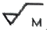
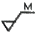
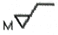
(정답률: 74%)
19. 구름 베어링의 호칭 번호가 64⑤일 때, 베어링의 안지름은 몇 mm인가?
- 20
- 25
- 30
- 4⑤
(정답률: 76%)
20. 수나사의 측명을 도시하고자 할 때, 다음 중 가장 적합하게 나타낸 것은?
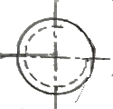
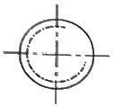
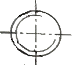
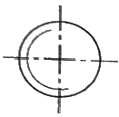
(정답률: 63%)
21. 도형의 중심을 표시하거나 중심이 이동한 중심궤적을 표시하는데 쓰이는 선의 명칭은?
- 지시선
- 기준선
- 중심선
- 가상선
(정답률: 81%)
22. 투상도법에서 그림과 같이 경사진 부분의 실제 모양을 도시하기 위하여 사용하는 투상도의 명칭은?
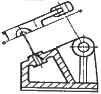
- 부분 투상도
- 국부 투상도
- 회전 투상도
- 보조 투상도
(정답률: 48%)
23. 그림과 같은 입체도에서 화살표 방향을 정면으로 할 경우 평면도로 옳은 것은?
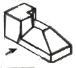
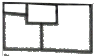
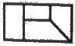
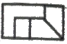
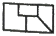
(정답률: 78%)
24. 그림과 같이 축의 치수가 주어졌을때 편심량 A는 얼마인가?
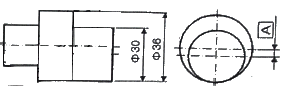
- 1 mm
- 3 mm
- 6 mm
- 9 mm
(정답률: 63%)
25. 길이 치수의 허용 한계를 지시한 것 중 잘못 나타낸 것은?
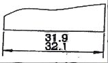
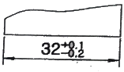
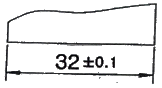
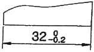
(정답률: 74%)
26. 수직 밀링머신의 장치 중 일반적인 운동 관계가 옳지 않은 것은?
- 테이블 - 수직 이동
- 주축 스핀들 - 회전
- 니 - 상하 이동
- 새들 - 전후 이동
(정답률: 62%)
27. 수용성 절삭유에 대한 설명중 틀린 것은?
- 광물성유를 화학적으로 처리하여 원액과 물을 혼합하여 사용한다.
- 표면 활성제와 부식 방지제를 첨가하여 사용한다.
- 점성이 낮고 비열이 커서 냉각효과가 작다.
- 고속절삭 및 연삭 가공액으로 많이 사용한다.
(정답률: 72%)
28. 선반을 이용한 가공의 종류 중 거리가 먼 것은?
- 널링 가공
- 원통 가공
- 더브테일 가공
- 테이퍼 가공
(정답률: 71%)
29. 줄의 작업 방법이 아닌 것은?
- 직진법
- 사진법
- 후진법
- 병진법
(정답률: 59%)
30. 지름이 60 mm인 연삭숫돌이 원주속도 1200m/min ø20 mm인 공작물을 연삭할 때 숫돌차의 회전수는 약 몇 rpm 인가?
- 16
- 23
- 6370
- 62800
(정답률: 69%)
3과목: 기계공작법
31. 다음 중 왕복대를 이루고 있는 것은?
- 공구대와 심압대
- 새들과 에이프런
- 주축과 공구대
- 주축과 새들
(정답률: 64%)
32. 밀링 절삭 방법에 하향 절삭에 대한 설명이 아닌 것은?
- 백 래시를 제거해야 한다.
- 기계의 강성이 낮아도 무방하다.
- 상향 절삭에 비하여 공구의 수명이 길다.
- 상향 절삭에 비하여 가공면의 표면 거칠기가 좋다.
(정답률: 65%)
33. 단조나 주조품에 볼트 또는 너트를 체결할 때 접촉부가 밀착되게 하기 위하여 구멍 주위를 평탄하게 하는 가공 방법은?
- 스폿 페이싱
- 카운터 싱킹
- 카운터 보링
- 보링
(정답률: 59%)
34. 주조할 때 뚫린 구멍이나 드릴로 뚫은 구멍을 깎아서 크게 하거나, 정밀도를 높게 하기위한 가공에 사용되는 공작기계는?
- 플레이너
- 슬로터
- 보링 머신
- 호빙 머신
(정답률: 68%)
35. 밀링 머신에서 이송의 단위는?
- F = mm/stroke
- F = rpm
- F = mm/min
- F = rpmㆍmm
(정답률: 74%)
36. 소성가공의 종류가 아닌 것은?
- 단조
- 호빙
- 압연
- 인발
(정답률: 54%)
37. 측정량이 증가 또는 감소하는 방향이 다름으로써 생기는 동일치수에 대한 지시량의 차를 무엇이라 하는가?
- 개인 오차
- 우연 오차
- 후퇴 오차
- 접촉 오차
(정답률: 45%)
38. 연성의 재료를 가공할 때 자주 발생되며, 연속되는 긴 칩으로 두께가 일정하고 가공표면이 양호하여 공구수명을 길게(연장)할 수 있는 것은?
- 유동형 칩
- 전단형 칩
- 열단형 칩
- 균열형 칩
(정답률: 79%)
39. 선반가공에서 바이트날 부분과 공작물의 가공면 사이에 마찰로 인한 열이 많이 발생되어 정밀가공에 어려움이 생긴다. 이 때 생기는 열을 측정하는 방법으로 거리가 먼 것은?
- 발생되는 칩의 색깔에 의한 측정 방법
- 칼로리미터에 의한 측정 방법
- 열전대에 의한 측정 방법
- 수은 온도계에 의한 측정 방법
(정답률: 57%)
40. 피니언 커터를 이용하여 상하 왕복운동과 회전운동을 하는 창성식 기어절삭을 할 수 있는 기계는?
- 마그 기어 셰이퍼
- 브로칭 기어 셰이퍼
- 펠로스 기어 셰이퍼
- 호브 기어 셰이퍼
(정답률: 35%)
4과목: CNC공작법 및 안전관리
41. 선반에서 척에 고정할 수 없는 불규칙하거나 대형의 가공물 또는 복잡한 가공물을 고정할 때 사용하는 것은?
- 연동척
- 콜릿척
- 벨척
- 면판
(정답률: 54%)
42. 금속으로 만든 작은 덩어리를 공작물 표면에 고속으로 분사하여 피로 강도를 증가시키기 위한 냉간 가공법으로 반복 하중을 받는스프링, 기어, 축 등에 사용하는 가공법은?
- 래핑
- 호닝
- 숏 피닝
- 슈퍼 피니싱
(정답률: 48%)
43. 다음과 같은 CNC 선반 프로그램에서 일감의 직경이 ø34mm일 때의 주축 회전수는 약 몇 rpm 인가?
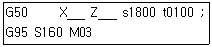
- 160
- 1000
- 1500
- 1800
(정답률: 38%)
44. 다음 중 CNC 시스템의 제어방법이 아닌 것은?
- 위치결정 제어
- 직선절삭 제어
- 윤곽절삭 제어
- 복합절삭 제어
(정답률: 55%)
45. 다음 중 CNC 공작기계 좌표계의 이동위치를 지령하는 방식에 해당하지 않는 것은?
- 절대지령 방식
- 증분지령 방식
- 혼합지령 방식
- 잔여지령 방식
(정답률: 63%)
46. 다음 중 공작기계에서의 안전 및 유의사항으로 틀린 것은?
- 주축 회전 중에는 칩을 제거하지 않는다.
- 정면 밀링 커터 작업시 칩 커버를 설치한다.
- 공작물 설치시는 반드시 주축을 정지시킨다.
- 측정기와 공구는 기계 테이블 위에 놓고 작업한다.
(정답률: 83%)
47. 다음 CNC선반 프로그램에서 나사가공에 사용된 고정 사이클은?
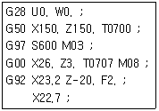
- G28
- G50
- G92
- G97
(정답률: 61%)
48. 다음 중 CNC 선반에서 공구기능 "T0303"의 의미로 가장 올바른 것은?
- 3번 공구 선택
- 3번 공구의 공구보정 3번 선택
- 3번 공구의 공구보정 3번 취소
- 3번 공구의 공구보정 3회 반복수행
(정답률: 74%)
49. 머시닝센터에서 ø10 엔드밀로 40 × 40 정사각형 외각 가공 후 측정하였더니 41 × 41로 가공되었다. 공구지름 보정량이 5일 때 얼마로 수정하여야 하는가?(단, 보정량은 공구의 반지름 값을 입력한다.)
- 5
- 4.5
- 5.5
- 6
(정답률: 49%)
50. 다음 중 CNC 공작기계에서 사용되는 외부 기억장치에 해당하는 것은?
- 램(RAM)
- 디지타이저
- 플로터
- USB플래시메모리
(정답률: 68%)
51. 다음 중 CNC 선반에서 스핀들 알람(SPINDLE ALARM)의 원인이 아닌 것은?
- 과전류
- 금지영역 침범
- 주축모터의 과열
- 주축모터의 과부하
(정답률: 53%)
52. 다음 프로그램의 ( ) 부분에 생략된 연속 유효(Modal) G코드(code)는?
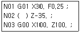
- G00
- G01
- G02
- G04
(정답률: 56%)
53. 머시닝센터 작업 중 회전하는 엔드밀 공구에 칩이 부착되어 있다. 다음 중 이를 제거하기 위한 방법으로 옳은 것은?
- 입으로 불어서 제거한다.
- 장갑을 끼고 손으로 제거한다.
- 기계를 정지시키고 칩제거 도구를 사용하여 제거한다.
- 계속하여 작업을 수행하고 가공이 끝난 후에 제거한다.
(정답률: 78%)
54. 다음 중 CNC 선반에서 다음의 단일형 고정 사이클에 대한 설명으로 틀린 것은?
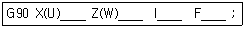
- I__ 값은 직경값으로 지령한다.
- 가공후 시작점의 위치로 되돌아온다.
- X(U)____ 의 좌표값은 X축의 절삭 끝점 좌표이다.
- Z(W)____ 의 좌표값은 Z축의 절삭 끝점 좌표이다.
(정답률: 46%)
55. 다음 중 머시닝센터의 주소(address) 중 일반적으로 소수점을 사용할 수 있는 것으로만 나열한 것은?
- 보조기능, 공구기능
- 원호반경지령, 좌표값
- 주축기능, 공구보정번호
- 준비기능, 보조기능
(정답률: 65%)
56. 다음 중 CNC 공작기계의 특징으로 옳지 않은 것은?
- 공작기계가 공작물을 가공하는 중에도 파트 프로그램 수정이 가능하다.
- 품질이 균일한 생산품을 얻을 수 있으나 고장 발생시 자가 진단이 어렵다.
- 인치 단위의 프로그램을 쉽게 미터 단위로 자동 변환할 수 있다.
- 파트 프로그램을 매크로 형태로 저장시켜 필요할 때 불러 사용할 수 있다.
(정답률: 54%)
57. 머시닝센터에서 ø12-2날 초경합금 엔드밀을 이용하여 절삭속도 35m/min, 이송 0.⑤mm/날, 절삭 깊이 7mm의 절삭조건으로 가공하고자 할 때 다음 프로그램의 ( )에 적합한 데이터는?
- 12.25
- 35.0
- 92.8
- 928.0
(정답률: 42%)
58. 다음 중 CNC 선반에서 원호 보간을 지령하는 코드는?
- G02, G03
- G20, G21
- G41, G42
- G98, G99
(정답률: 68%)
59. 머시닝센터에서 주축 회전수를 100rpm으로 피치 3mm인 나사를 가공하고자 한다. 이때 이송속도는 몇 mm/min으로 지령해야 하는가?
- 100
- 200
- 300
- 400
(정답률: 77%)
60. 기계상에 고정된 임의의 점으로 기계 제작시 제조사에서 위치를 정하는 점으로, 사용자가 임의로 변경해서는 안되는 점을 무엇이라 하는가?
- 기계원점
- 공작물 원점
- 상대 원점
- 프로그램 원점
(정답률: 68%)